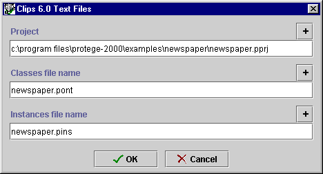

Saving a Text Project
Saving a Text Project

You can save the class and instance information of any Protégé-2000 project
in one of several text form. The User Interface information from the Forms Tab
is always in the standard Protégé text-format.
Note: When a project is saved in text format, changes to the project
are not committed until you click "Save".
You can save a Protégé-2000 project as text files in one of two ways:
- When the project is first created, by selecting Standard Text Files
in the Select Format dialog box.
- By selecting Save in Format... from the Project menu and
then selecting Standard Text Files in the Select Format dialog box.
After you have made your selection, choose the name and location for the
project as follows:
- When you have selected Standard Text Files, the Text Files dialog box is displayed:

- To select or change the name or location of the pprj file, enter
the information you want in the Project line of the dialog box. Be sure to give
the file a pprj
extension. To browse for a new location, cllick the
 button. If you do not
specify a location for the project, by default, the project is saved in the
directory where Protégé-2000 is installed.
button. If you do not
specify a location for the project, by default, the project is saved in the
directory where Protégé-2000 is installed.
- Protégé-2000 will automatically use the name of the pprj
file as the name of the text file that contains
the class information. If you wish to change this, enter the name in the Class file name line.
Be sure to give it a pont extension.
- Protégé-2000 will automatically use the name of the pprj
file as the name of the text file that contains the instances information.
If you wish to change this, enter the name in the Instance file name line.
Be sure to give it a pins extension.
- Click OK.
Next: Saving a
Database Project
Project Table of Contents